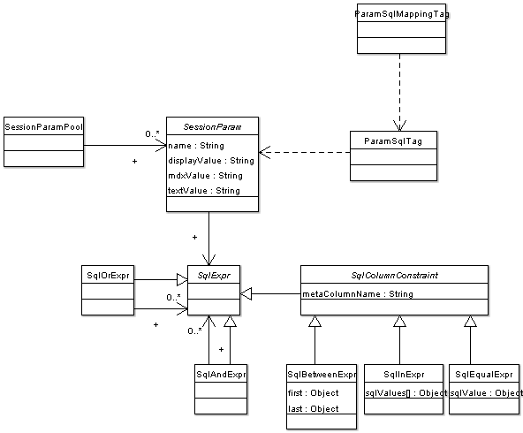

Implements Session Parameters.

A SessionParam is a parameter that can modify MDX and SQL queries. The
parameters are held in a SessionParamPool. There is one pool per HttpSession.
SessionParam may be created in several ways:
- by some application logic. For example at login-time there may be some parameters
that restrict the data a user is allowed to see
- by clicking on a member in the JPivot table
{@link com.tonbeller.jpivot.table.navi.ClickableMemberTag}
- by clicking on a hyperlink {@link com.tonbeller.wcf.param.ParamLinkTag}
Parameters may be used in sql queries. Example for JSTL's sql tag:
<wcf:paramPool/>
<sql:query var="result" dataSource="${myDataSource}">
SELECT ...
FROM CUSTOMERS T1, ...
WHERE <wcf:paramSql param="CUSTOMERID" qname="T1.CUSTOMER_PK"/>
</sql:query>
See unit tests and paramtest.jsp for more examples.